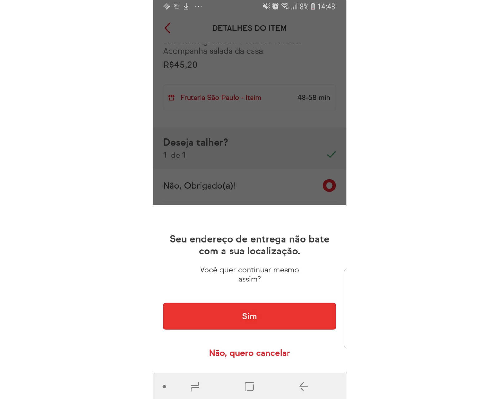
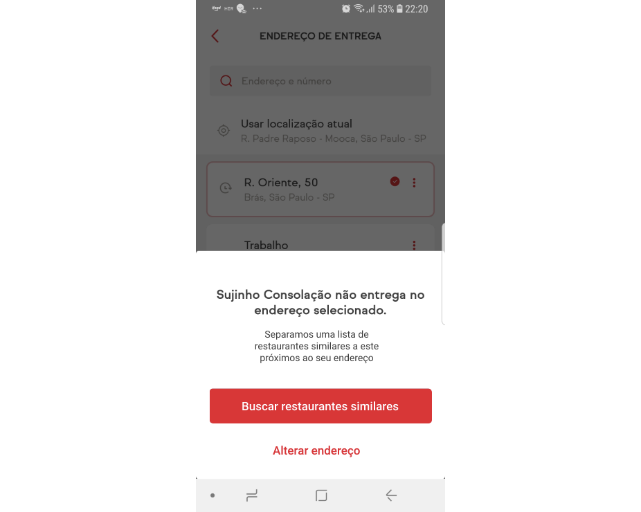
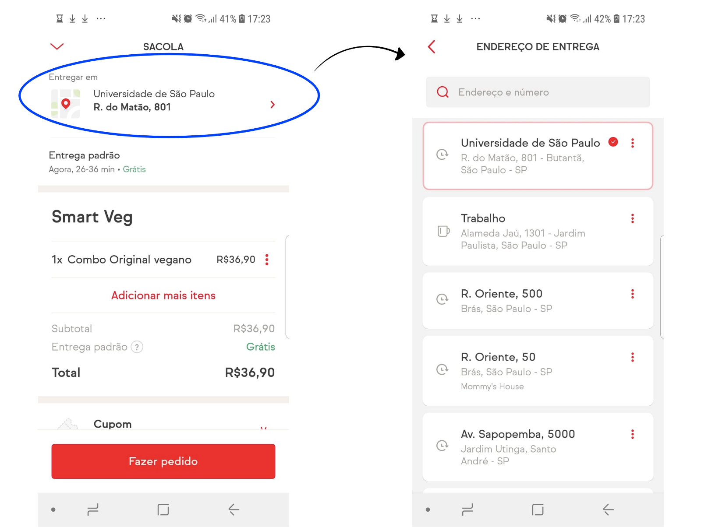

UX Case - Novo recurso de design para food delivery mobile app
Este é um projeto individual que fiz durante o Bootcamp UX-UI da IronHack.
O desafio
O briefing pedia para analisar um aplicativo já existente e altamente adotado e incorporar um novo recurso ao produto existente.
Entrega do projeto
Ao final do projeto, devemos fazer uma apresentação pública (5 minutos) do novo recurso e mostrar um protótipo interativo de alta fidelidade que reflita nosso melhor caminho a seguir com base em pesquisas, iterações e testes.
Introdução
Nada acontece no vácuo
Como designer, precisamos sempre melhorar os produtos e manter os negócios alinhados às necessidades dos usuários. Então, para este estudo de caso, eu estava exercitando como propor soluções em prazos apertados (4 dias) para um aplicativo altamente adotado no Brasil chamado iFood.
O iFood é um aplicativo mobile de delivery de comida onde o usuário pode escolher restaurantes, conferir seus cardápios e fazer pedidos para entregar no endereço escolhido.
Neste caso de estudo, mostrarei como a hipótese para o novo recurso mudou depois que fiz a pesquisa do usuário. Você é curioso? Vamos.
Iniciando o projeto (Pesquisa) - Research
No início do projeto não havia muito tempo para pesquisar então optei por fazer uma Guerrilla Research (pesquisa) para conversar com as pessoas e obter alguns insights. Criar uma nova feature é uma tarefa comum na vida de um designer, mas não é tão simples quanto parece. Novos recursos podem tornar o aplicativo mais complexo de usar e gerar featureurismo, então para evitar recursos inúteis eu estava tentando entender o que realmente poderia deixar o usuário mais feliz. Então, durante as entrevistas, prestei atenção nas soluções alternativas que os usuários estavam acostumados a fazer no aplicativo para resolver suas necessidades específicas, quais eram suas frustrações em relação aos serviços de entrega de comida, as experiências ruins que tiveram com os serviços de entrega, e também tentei entender por que as pessoas escolhem um aplicativo em vez de outro ou até mesmo o que faz as pessoas pararem de usar um aplicativo.
Ideias de pesquisas de usuários (user research)
Depois de entrevistar muitos usuários diferentes, cheguei às seguintes conclusões:
1 - Os usuários podem precisar de uma boa solução para pedir comida em nome de outra pessoa, como um amigo, para que esse amigo possa ser notificado de que a comida está chegando e o usuário não precise ficar rastreando a entrega para avisar ao amigo quando puder abra a porta para o entregador.
“Minha mãe não sabe usar aplicativos de celular, então ela me liga e eu peço comida para ela. O problema é que preciso verificar quando chega a entrega para ela sair para pegar.” Juliana, 36.
“Já pedi comida para um amigo porque ele estava falido”. Caio, 22 anos.
“Já pedi comida para um amigo porque ele estava falido”. Caio, 22 anos.
2 - Melhorar a experiência existente e reduzir a frustração do usuário quando ele tiver problemas ao usar o aplicativo, descritos por eles durante a entrevista.
“Tenho muitos aplicativos de entrega de comida instalados, mas escolho sempre aquele que considero mais fácil e que me cria menos problemas”. Rafael, 30.
“Não uso mais o iFood, pois tive problema com ele mais de uma vez, não percebi que o motorista chegou, e também ele não tentou entrar em contato comigo então só marcou que a comida havia sido entregue para eu, sem me entregar, então tive que pedir meu dinheiro de volta e perdi o horário de almoço do trabalho. E isso acontece muitas vezes porque os motoristas estão sempre com pressa". Renato, 35 anos.
"Às vezes o app falha se o endereço escolhido for diferente da minha localização GPS (e isso sempre acontece porque uso o ifood em lugares diferentes quase todos os dias), depois de selecionar todo o meu pedido ele me dá uma mensagem de erro e preciso cancelar o pedido e mudar o endereço e refazer tudo de novo". Juliana, 36 anos.
Evitando o featureurismo e priorizando as necessidades do usuário
Como disse após a pesquisa do usuário, percebi 2 oportunidades de recursos, mas tive que escolher apenas uma delas devido às limitações de tempo do projeto. A estratégia que escolhi foi minimizar a frustração do usuário ao usar o aplicativo para criar uma solução para melhorar a experiência existente, , em vez de criar outro novo recurso do zero para resolver um novo problema. Simplificando. É deixar o Rafael, o Renato e a Juliana felizes com o app e não escolher outro.
Falar é fácil! Mostre-me o protótipo
Se quiser conferir meu protótipo interativo você pode assistir ao vídeo, como um aplicativo brasileiro, está em português, então explicarei as telas nas próximas seções.
Primeira mudança - Resolver problemas
Atualmente quando os usuários acessam o aplicativo ele mostra uma lista de restaurantes com base no endereço escolhido no topo da página, mas esse endereço é definido com base na última vez que o usuário utilizou o aplicativo, portanto pode ser um local diferente daquele, onde eles estão no momento.
Qual é o problema?
Pois bem, o usuário pode perder tempo escolhendo o que quer comer e quando tentar finalizar o pedido poderá receber esta mensagem:
"Seu endereço de entrega não corresponde à sua localização. Deseja continuar mesmo assim?"E você pode escolher "Sim" para continuar sem lembrar qual endereço, por outro lado “Não, quero cancelar” e perder todo o pedido para voltar à página principal e verificar o endereço para alterar e reiniciar novamente.
Então para a primeira alteração propus alterar o botão “sim” para “Quero verificar meu endereço” para que você possa confirmar seu endereço para continuar finalizando seu pedido. A vantagem disso é evitar erros do usuário com endereços e reduzir a frustração, do usuário, então agora você não precisa cancelar e começar tudo de novo para alterar o endereço.
Segunda alteração - Problemas de entrega
Quando estava testando com usuários percebi que alguns usuários frequentes sabiam como contornar o problema de endereço. Então eles apenas clicaram em “sim” para finalizar o pedido e depois alteraram o endereço na tela do carrinho onde estão os detalhes do pedido.
Qual é o problema?
Pois bem, o usuário possivelmente pode gerar outro problema porque Portanto, o restaurante não pode entregar no endereço selecionado. No momento, o usuário conta com dois botões “Alterar restaurante” para voltar à tela principal e perder o pedido ou “Agora não” para voltar à tela do gráfico e tentar outro endereço.
Minha solução é criar uma lista personalizada de restaurantes semelhantes para o usuário diminuir a frustração com o erro encontrado, então ao invés de clicar em “Alterar restaurante” e voltar para a tela principal para reiniciar novamente, agora terá o botão para “Encontre restaurantes similares" próximos ao endereço de entrega e receba uma lista personalizada feita para o usuário.
Terceira mudança – Problemas de entrega
Durante minha pesquisa, muitos usuários relataram problemas com pedidos que não foram entregues porque o entregador saiu sem esperar o cliente ou até mesmo entregou no local errado.
Hoje só existe uma maneira de saber se seu pedido está chegando “notificações de texto” ou abrir o aplicativo e verificar manualmente. Alguns usuários disseram que se esqueceram de verificar o status da entrega em seus telefones. Alguns disseram que mantêm as notificações inativas na configuração do telefone para que não tenham feedback caso não abram o telefone, então percebo que precisamos de um novo recurso para resolver esse problema.
Para resolver esse problema, alguns usuários me disseram que usam o aplicativo de alarme do telefone para lembrar de verificar o status da entrega e ver se o entregador está próximo, mas ainda podem ter problemas se o motorista chegar cedo.
Então como novidade proponho adicionar uma opção de alarme para informar ao usuário que o entregador está chegando, sso economiza tempo tanto do entregador quanto do cliente, portanto temos duas categorias diferentes de usuários atendidos com esse recurso (entregador e cliente) .
Conclusão
Durante este projeto, aprendi muito sobre como implementar uma nova funcionalidade e desenhar uma nova tela mantendo a identidade do aplicativo. Também aprendi como conversar com os usuários e entender o que eles precisam sem que eles digam isso diretamente.
Se você tiver alguma dúvida, estou à disposição. Vamos falar sobre Tecnologia, Design UX-UI, UX Writer e Programação. Sinta-se à vontade para me adicionar no LinkedIn.